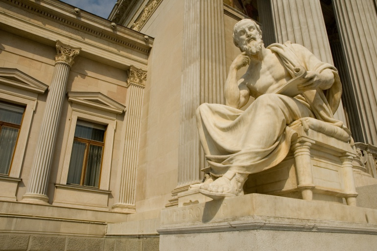

El escepticismo antiguo no es simplemente un discurso teórico, ni tampoco un sistema, es sobre todo una forma de vida que el filósofo elige, es también una práctica de liberación personal, cuya finalidad es lograr alcanzar la felicidad. Para este propósito se utilizan una serie de técnicas escépticas como son la suspensión del juicio (epoje) y la ataraxía. Una vez alcanzado se produce una transformación en la forma de ver del mundo y en su relación con él, que podría definirse como indiferencia.
El prototipo de sabio escéptico es su fundador Pirrón de Elide, cuya renuncia a las cosas mundanas, su indiferencia y su forma de vivir causaron tal admiración entre sus conciudadanos que según cuenta Diógenes Laercio, "por su respeto se dio decreto de inmunidad a los filósofos".
"Nada es más", este es el lema del movimiento escéptico: ninguna cosa es más, ni más cierta, ni más falsa, ni mejor, ni peor. Después tratar de hacer todo lo posible por conseguir un criterio para saber la verdad, el resultado es que ningún argumento resulta claramente definitivo para desvelar las apariencias, por tanto lo más acertado es suspender el juicio, a partir de esta decisión uno consigue liberarse de la inquietud. Esto da paso a una nueva forma de ver el mundo, de relacionarse con la realidad y romper así las ataduras dogmáticas.
El escepticismo comparte una característica importante con otros movimientos de la época, y es que la actitud vital de sus miembros es tan importante como su doctrina teórica. A grandes rasgos el escéptico después de examinar cuidadosamente todas las proposiciones concluye que no hay ninguna verdad que se pueda considerar definitiva, por lo que recomienda la suspensión de todo juicio (epojé). Una vez suspendido el juicio, el siguiente paso es conseguir la ataraxía, es decir, la serenidad de ánimo, la imperturbabilidad necesaria para poder llegar a la felicidad. Pero la suspensión del juicio no quiere decir que haya que abandonar toda investigación, ni toda crítica.
“Sképsis”, es la palabra griega que da origen al movimiento y significa hacer una reflexión cuidadosa de lo que se observa, “skeptikós” son los que miran o examinan cuidadosamente. El escepticismo tiene dos partes: una teórica, que es una teoría del conocimiento, o epistemología, según la cuál no hay ningún saber firme, y otra práctica, que es una actitud que consiste en no apegarse a ninguna opinión y suspender el juicio.